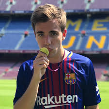

fran mg barcelona |
|
|  |
Biographia |
|
Francisco Manuel Gallardo es un videojugador en YouTube conocido por su canal Fran MG. Ha conseguido popularidad por sus frecuentes recorridos, Let's Play de FIFA y por sus videos destacados. Creó su canal de YouTube el 2 de julio del 2013 y publicó su primer video al día siguiente. Ha conseguido más de 6 millones de suscriptores en su canal de YouTube desde su creación. Uno de sus videos más populares, "Tiki Tiki - Real Madrid 0 - Barcelona 4 (Picky - Joey Montana Parody)," ha obtenido más de 9.5 millones de reproducciones. Nació y creció en Argentina. Su hermano menor es el actor Santiago Motolo. Ha conducido varias discusiones sobre jugadas de video y de fútbol en vivo donde el futbolista argentino Lionel Messi es el centro de la discusión. |
|